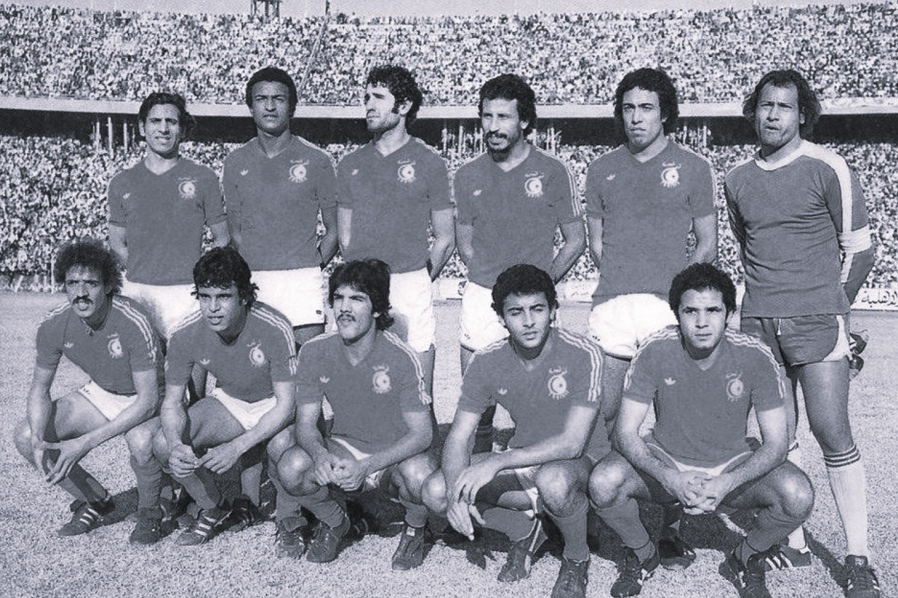
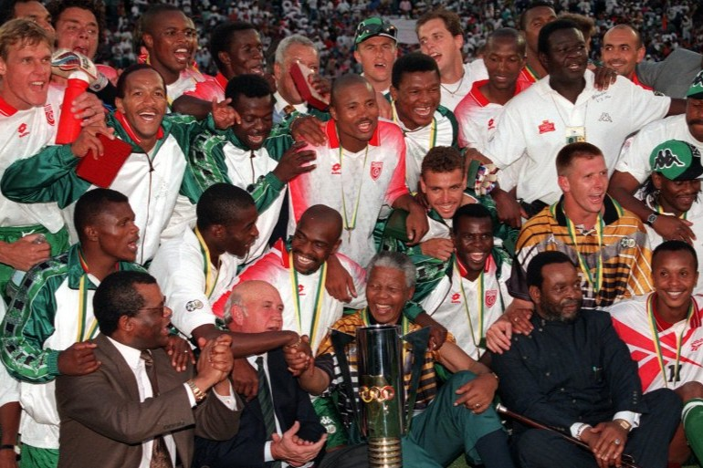
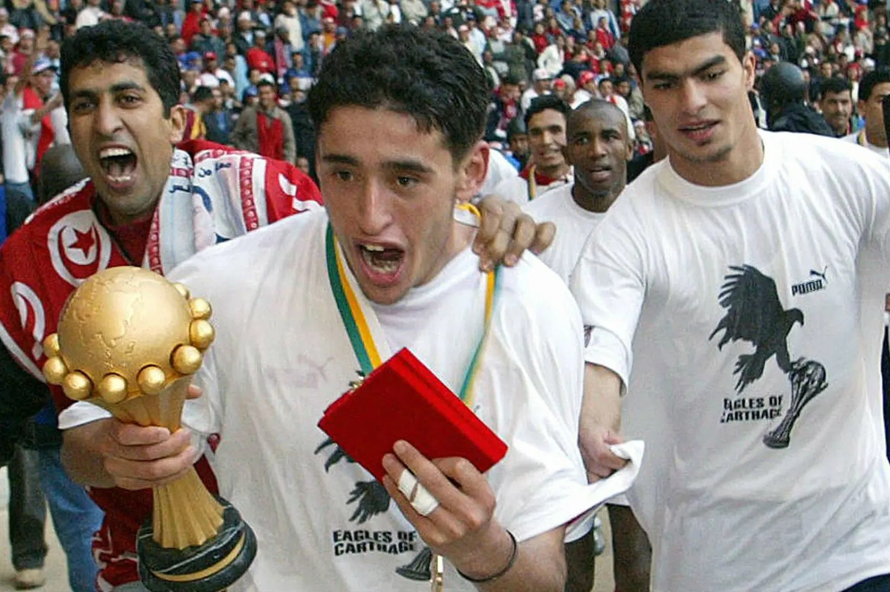
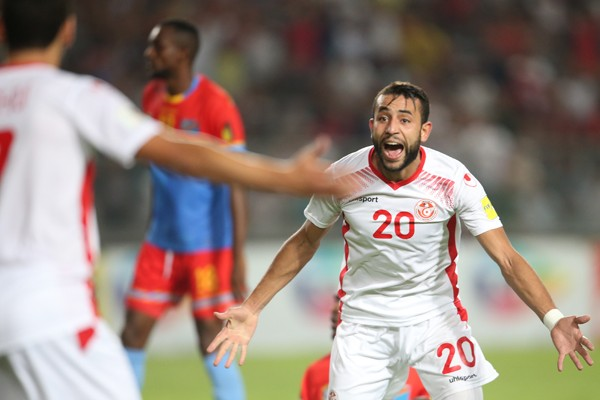
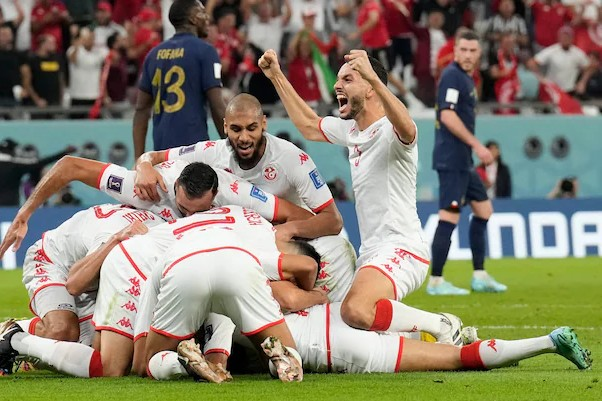

1978 – First World Cup
Participation in the 1978 FIFA World Cup in Argentina was a continental turning point. Tunisia became the
first African team to win a World Cup match, defeating Mexico 3-1.
It wasn’t just a victory: it was a
geopolitical statement in football. Africa was no longer a bystander. This performance also contributed to
increasing the number of African slots in future World Cups. Small step for Tunis, giant leap for CAF.


1996 – Africa Cup of Nations Finalist
After difficult years (missing six AFCON tournaments between 1978 and 1994), Tunisia came back strong and
reached the final of the 1996 Africa Cup of Nations.
Even though they lost to South Africa, this final
marked the beginning of a true resurgence. You could feel a cycle being prepared. The foundations were laid
for something bigger.
2004 – African Champions
The absolute high point: winning the 2004 Africa Cup of Nations, hosted at home.
Under the leadership
of Roger Lemerre, Tunisia claimed its first and only continental title. Defeating Morocco 2-1 in the final
firmly cemented this generation in national legend.
An entire country in a trance. Football became a
collective story.


2018 – Return to the World Cup
Qualification for the 2018 FIFA World Cup ended 12 years of absence from the global stage.
Even if the
journey was modest, this return symbolized regained stability and a new competitive generation. Tunisia
became a regular actor in African football again.
2022 – Victory against France
During the 2022 FIFA World Cup, Tunisia defeated the France national team 1-0 in the group stage.
Although
they did not qualify for the round of 16, beating the reigning world champion was a moment of immense
sporting pride. Football loves these paradoxes: you can exit early yet still write a memorable page.
